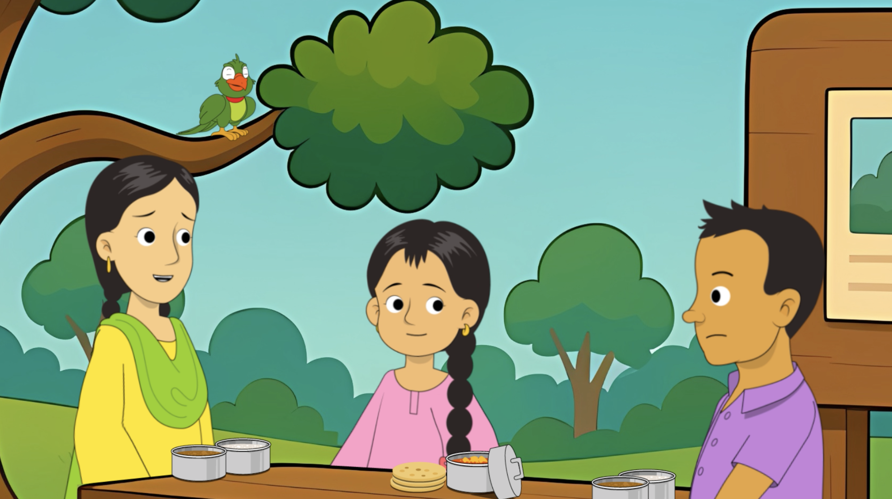
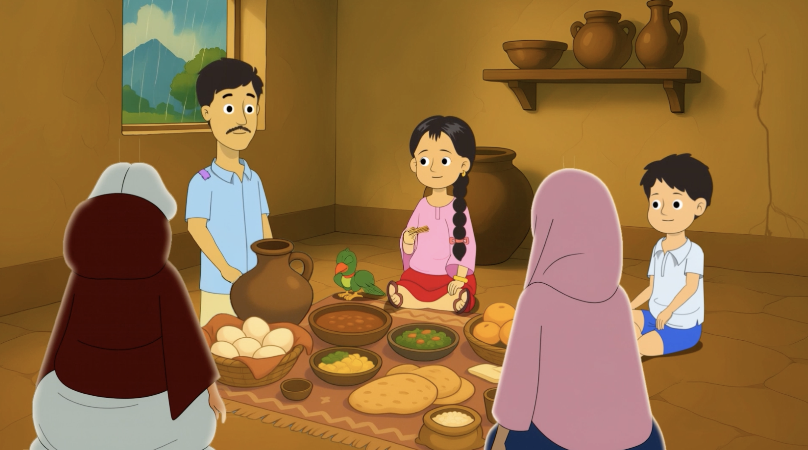
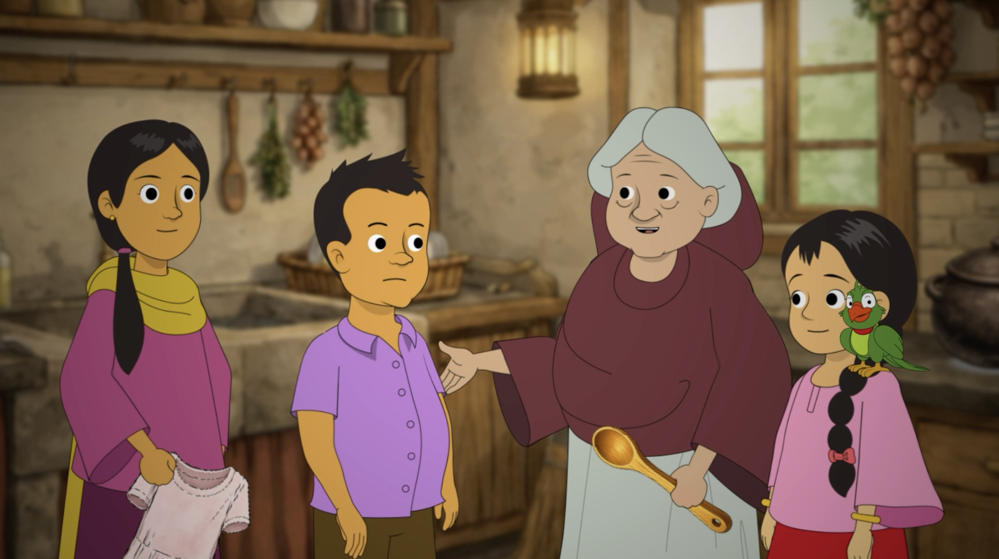
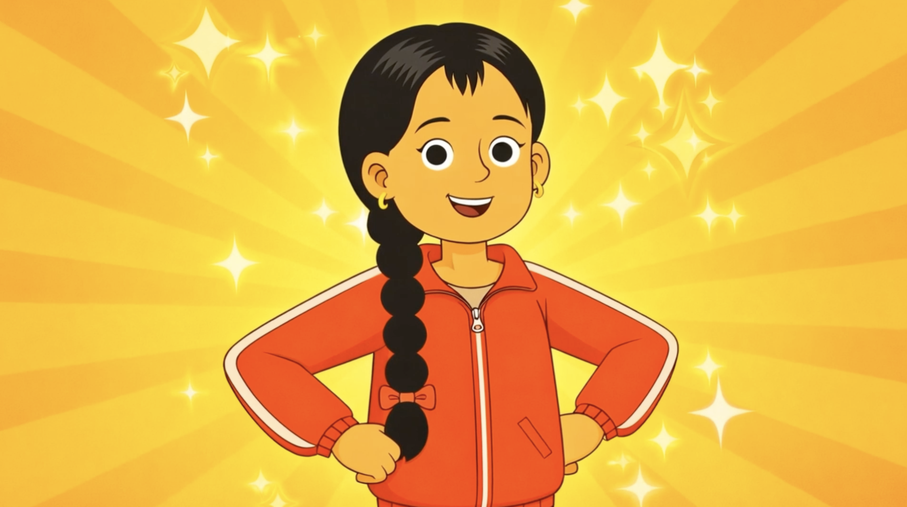

Final Deliverables
A 6-episode animated series produced in 4 languages, designed to help children explore emotions through relatable stories and culturally grounded characters. Each episode runs approximately 5–6 minutes and was fully localized with voiceover and lip-sync adaptation.

1How Are You Feeling Today?

2A Different Kind of Picnic

3The Worry Jar

4Just a Puff

5The Talking Spoon

6The Sport Day